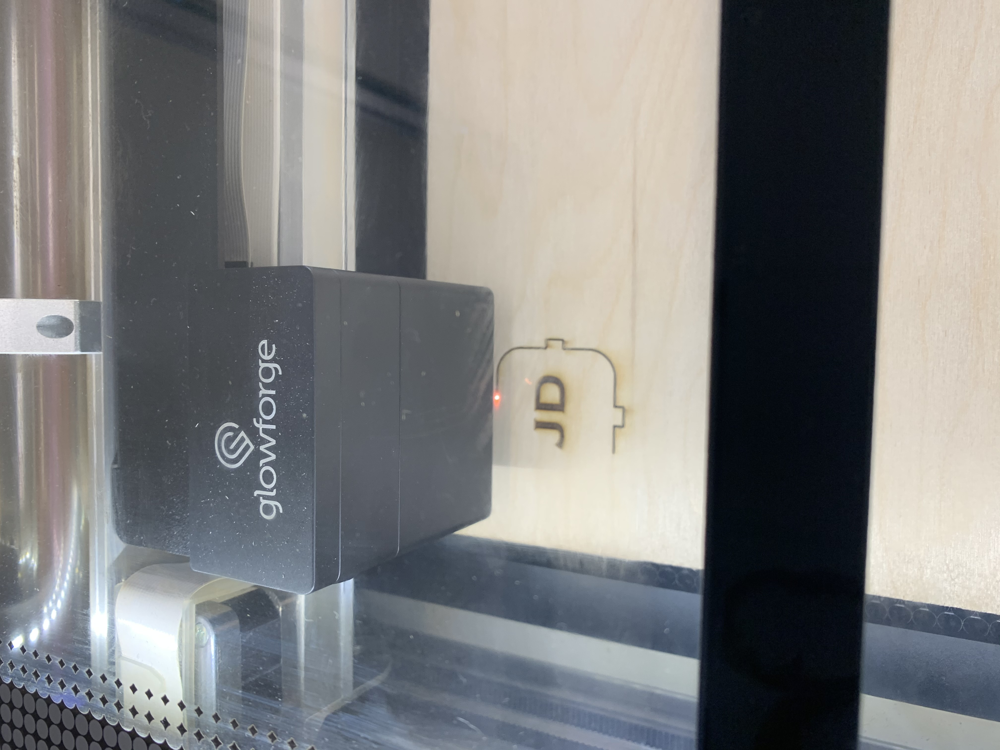

This week I got to use the most badass sounding machine in Wheaton College's arsenal. The laser cutter Glowforge takes a SVG file and a piece of material as an input, and uses a laser beam to cut to cut the material.
The challenge of using the Glowforge to make a box is somehow using a 2D object to make a 3D object. Luckily for me someone whos way smarter then my mathamatically figured out this stuff an put it online for free. Using boxes.py I chose a design that I liked and thought would be really cool. I kept most of the setting's default, but I lowered the height and width by 25% so that it would print quicker. After saving as an SVG I moved the file into Adobe Illistrator and added my Initials, as well as a cool looking star thing to go on alternate ends of the box becuase I wasnt sure what side I wanted to be the front. I again saved the file as an SVG and moved over to the Mac in the FabLab.
The Easiest CAD Ever This "CAD" was wicked easy becuase almost everything was done by saving my model. I did some design in Illistrator but I've done that enough it was a piece of cake.
The remainder of the project was wicked easy. All I had to do was load my SVG into the GlowForge App and move a couple of elements around for space. After setting a 1/8th plank of birch plywood on the tray I turned the vacuum on so I didnt light the lab on fire, and hit the blinking button to start my cut.
Never Look at the Explosion I wasnt sure if looking at the laser would hurt me, but I figured it would be better to be safe then blind
I watched the machine for 12 minutes and 43 seconds, while being careful to not look directly into the laser becuase that seems like something that would make my eyes hurt. I took our my pieces, and started the assembly. This part took a little bit of elbow grease and thinking becuase the design wasnt laid out exactly like the demonstration one but with the help of a little bit of super glue I got a super cool box that functions pretty decently. The sliding door gets a little bit stuck sometimes, but overall I'm really proud of what I built!
It took a little bit of workn to get these parts to snap together. I didnt realize that I would need glue for this one, and ended up getting an embarrassing amount on my hands. Of all the tool we've used this class of course super glue would give me the most trouble
DESIGN FILES HERE